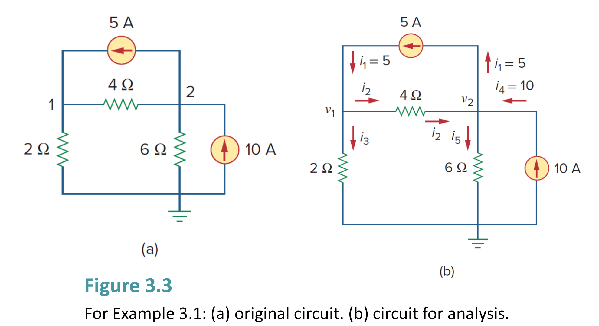

Example 3.1
Slide P.8–13
節點電壓法 (Nodal Analysis)
雙節點電路之節點電壓與支路電流計算
計算圖 3.3(a) 電路中的各節點電壓 $v_1, v_2$ 以及流經各支路的電流 $i_1 \sim i_5$。
Calculate the node voltages in the circuit shown in Fig. 3.3 and find branch currents.

原教材電路圖 · Figure 3.3 (Slide P.8)
🎯 求解目標：求解節點電壓 $v_1, v_2$ 及支路電流 $i_1, i_2, i_3, i_4, i_5$
先在計算紙上演練 KCL 列式與克拉瑪法則，再對解答
📝 詳細推導過程與標準解答 ▼
逐步解析：
-
1. 設定參考節點與標定電壓：
選擇電路底部節點為接地參考點（電位為 $0\text{ V}$）。標定非參考節點 1 之電壓為 $v_1$，節點 2 之電壓為 $v_2$。 -
2. 對節點 1 套用克希荷夫電流定律 (KCL)：
流入電流 = 流出電流： $$i_1 = i_2 + i_3 \implies 5 = \frac{v_1 - v_2}{4} + \frac{v_1 - 0}{2}$$ 方程式兩邊同乘以 4 進行整數化： $$20 = (v_1 - v_2) + 2v_1 \implies 3v_1 - v_2 = 20 \quad \cdots (1)$$ -
3. 對節點 2 套用 KCL：
流入電流 = 流出電流： $$i_2 + i_4 = i_1 + i_5 \implies \frac{v_1 - v_2}{4} + 10 = 5 + \frac{v_2 - 0}{6}$$ 兩邊同乘以 12 整理： $$3(v_1 - v_2) + 120 = 60 + 2v_2 \implies -3v_1 + 5v_2 = 60 \quad \cdots (2)$$ -
4. 聯立方程式求解 (代入消去法 / Cramer's Rule)：
將第 $(1)$ 式與第 $(2)$ 式直接相加 $(1) + (2)$： $$(3v_1 - v_2) + (-3v_1 + 5v_2) = 20 + 60 \implies 4v_2 = 80 \implies v_2 = 20\text{ V}$$ 將 $v_2 = 20\text{ V}$ 代回第 $(1)$ 式： $$3v_1 - 20 = 20 \implies 3v_1 = 40 \implies v_1 = \frac{40}{3}\text{ V} \approx 13.333\text{ V}$$ 矩陣形式 (Cramer's Rule 驗證)： $$\begin{bmatrix} 3 & -1 \\ -3 & 5 \end{bmatrix} \begin{bmatrix} v_1 \\ v_2 \end{bmatrix} = \begin{bmatrix} 20 \\ 60 \end{bmatrix}, \quad \Delta = 15 - 3 = 12$$ $$v_1 = \frac{\Delta_1}{\Delta} = \frac{100 - (-60)}{12} = \frac{160}{12} = 13.333\text{ V}, \quad v_2 = \frac{\Delta_2}{\Delta} = \frac{180 - (-60)}{12} = \frac{240}{12} = 20\text{ V}$$ -
5. 計算各支路電流：
$$i_1 = 5\text{ A}$$ $$i_2 = \frac{v_1 - v_2}{4} = \frac{13.333 - 20}{4} = -1.667\text{ A} \quad \text{（負號表示實際流向為節點 2 流向節點 1）}$$ $$i_3 = \frac{v_1}{2} = \frac{13.333}{2} = 6.667\text{ A}$$ $$i_4 = 10\text{ A}$$ $$i_5 = \frac{v_2}{6} = \frac{20}{6} = 3.333\text{ A}$$
✅ 標準答案：
$v_1 = 13.333\text{ V}\ (\frac{40}{3}\text{ V}),\ v_2 = 20\text{ V}$
$i_1 = 5\text{ A},\ i_2 = -1.667\text{ A},\ i_3 = 6.667\text{ A},\ i_4 = 10\text{ A},\ i_5 = 3.333\text{ A}$
$i_1 = 5\text{ A},\ i_2 = -1.667\text{ A},\ i_3 = 6.667\text{ A},\ i_4 = 10\text{ A},\ i_5 = 3.333\text{ A}$